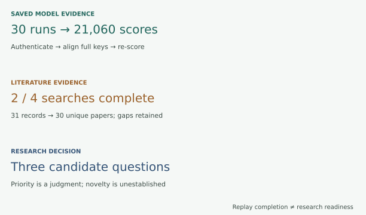
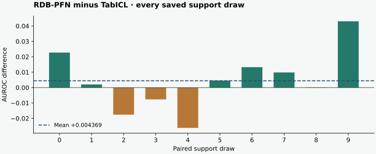

From evidence to a research question
Year 5 · Q3 checkpoint · Evidence before ambition
You have seen models, temporal audits, serving simulations and privacy mechanisms. Now turn that work into one research question that an experiment could disprove. This serves the mission: make the relational-learning thesis legible to a skeptical reader.
Tangible win: write a claim whose scope matches its evidence, then specify the next observation that could change your mind. Read the short core in about 15 minutes; complete the notebook and written defense separately.
Lesson 181 supplies the autocomplete contract. Lesson 182 separates a reproduced comparison from a proposed hybrid. Lesson 188 separates collected papers from complete discovery. Lesson 189’s draft problem-ranking work is an optional bridge; the three cards below make this checkpoint self-contained, without assuming you completed it.
1 · State the claim and its population¶
Vocabulary for the checkpoint. A claim is a statement the evidence may support. An estimand is the exact quantity an experiment aims to estimate. A paired contrast compares outcomes for matched queries and training seeds, so the comparison shares those sources of variation. A falsifier is a result specified in advance that would count against the claim. The proposed study below is a plan, not a completed experiment.
2 · Walk from bytes to a sentence¶
For each saved run, authenticate its receipt; match every (entity_id, cutoff) to the released test labels; verify the full support draw; then score. Check the entire declared grid before computing a mean. Dropping an inconvenient seed changes the experiment.


RDBPFN uses relational synthetic-prior pretraining; RDBPFN_single is its single-table-prior control; TabICLv1.1 is the released tabular comparator. All three consume the same released DFS feature interface. A composite route joins a source entity through an intermediate row to a destination; that route is not introduced by this replay.
The chosen published comparison is RDB-PFN v5 Table 9, rel-f1/driver-dnf, with three released models, ten paired support draws, 512 support rows and all 702 test queries. L190 replays all 21,060 saved predictions from L182. It does not load a model or repeat pretraining. The released DFS features and label orientation are retained. Reconstructing raw labels, historical feature availability and DFS from the database are outside this replay. See the versioned primary paper and frozen protocol.
| Saved model | Mean AUROC | Sample SD across support draws |
|---|---|---|
| RDBPFN | 0.721938 | 0.019983 |
| RDBPFN_single | 0.663990 | 0.034177 |
| TabICLv1.1 | 0.717568 | 0.009770 |
Worked trace: for two positive scores [0.9, 0.5] and two negative scores [0.1, 0.5], there are four positive–negative pairs. Three wins plus half credit for one tie give AUROC 3.5 / 4 = 0.875. The real implementation uses average ranks, then an independent verifier counts pairs directly. Query keys align the scores; row order never establishes identity.


Write this: “On the frozen F1 task and paired support draws, the saved RDB-PFN mean AUROC exceeds the saved TabICL mean by 0.004369; the difference is positive in 6/10 draws.” This is descriptive variation over support draws, not a confidence interval for performance on new databases. Executable replay · independent checks.
Read average gain and win count separately. These invented ten-draw contrasts are AUROC differences, model A minus model B, not additional benchmark runs:
| Paired differences | A wins | Mean |
|---|---|---|
| Nine +0.001; one −0.020 | 9/10 | −0.0011 |
| One +0.020; nine −0.001 | 1/10 | +0.0011 |
In the first row, (9 × 0.001 − 0.020)/10 = −0.0011: frequent small gains do not outweigh one larger loss. The second reverses every sign. Win count records frequency; mean records signed magnitude. Reporting both reveals behavior that either alone hides. Neither table row establishes transfer to a new database.
Transfer the trace. Replace the first row's −0.020 by −0.009. The mean becomes zero while A still wins nine draws. Explain why “usually wins” and “positive average gain” are different claims before writing the actual frozen result above.
Do not infer: novel hybrid, database transfer, fresh training, or general superiority. Composite message passing already exists in RelGNN. Combining two existing ideas needs a precise insertion point, compatible training and a matched control.
3 · Break the claim deliberately¶
Try removing complete coverage while leaving authentication intact. A correct hash can identify an incomplete packet. Next ask for novelty with all checks enabled. Metric evidence still cannot answer that question.
The four controls are hypothetical evidence scenarios; they do not alter the frozen artifacts or the actual checkpoint status. The Python claim_gate contract used in the notebook is shown below.
def claim_gate(kind, evidence):
"""Only the named saved metric is admissible from this replay's four checks."""
if kind=='saved_metric':
required=['authenticated','complete','metric_checked','comparable']
return 'SUPPORTED_REPLAY' if all(evidence.get(k) is True for k in required) else 'BLOCKED'
if kind=='fresh_training':return 'NOT_RUN'
if kind in ['novelty','general_superiority']:return 'NOT_ESTABLISHED'
raise ValueError('Unknown claim kind')
4 · Rank questions, then test the ranking¶
What changed since L189? This checkpoint uses a separate authored shortlist. It retains availability and composite structure, but replaces cross-database pretraining with joint serving/privacy constraints to synthesize Lessons 186–187. Its composite proposal contrasts scratch versus pretrained initialization; L182/L189 instead emphasize the synthetic-prior and encoder choices. These are different experiments. The 27 weight settings below rank this checkpoint’s three cards; they do not extend or independently confirm L189’s ranking. Keeping the earlier shortlist visible makes the change a decision to defend.
Availability-aware autocomplete. The apparent benefit of relational context shrinks when context must be available by the query cutoff. Existing query keys and audits make a paired information-access test easy to specify. True arrival histories remain missing.
Composite structure in a foundation learner. Adding composite routes interacts positively with relational pretraining under matched compute. High potential relevance, but inserting routes changes the model and invalidates direct checkpoint reuse.
Accuracy under serving and privacy constraints. A declared relational pipeline retains useful accuracy subject to fixed freshness, latency and entity-level privacy constraints. Requires real latency, availability histories, a privacy unit, and a bounded release/training mechanism; existing simulations do not measure their joint utility.
The scores are authored judgments on a 1–5 scale, not measurements. Priority is impact × weighted mean(data, implementation, compute feasibility). High feasibility means easier to investigate. Inspect the rationale before accepting a score; changing weights alone cannot test whether the scores are wrong.
Availability wins all 27 weight triples drawn from {1,2,3}. That is stability within this rubric, not evidence it will yield a publishable result. Lesson 186 provides serving simulations and Lesson 187 illustrates entity-level privacy boundaries. Their numerical experiments are not rerun here; their frozen status receipts explicitly limit the joint-constraints proposal.
5 · Read the five-page research document¶
Open the worked document or its five-page PDF. The pages answer five different questions:
- What narrow question follows from the mission?
- What evidence actually supports it?
- Which alternatives were considered, and why this ranking?
- What paired experiment could falsify the leading hypothesis?
- What is missing, and what decision follows?
Read the proposed uncertainty calculation. Mean absolute error (MAE) averages prediction distances from the true finishing positions; lower is better. A bootstrap repeatedly resamples observed units to explore how an estimate varies. Resampling whole driver clusters keeps one driver’s repeated cutoffs together. The proposed interval concerns those drivers on this task, not unseen databases.
The leading design compares event-time visibility with measured availability visibility on identical autocomplete queries. Genuine arrival histories are an admission requirement. Artificial delays can test a mechanism, but cannot stand in for the historical experiment. A model defect that prevents fitting is an engineering blocker; it does not establish a research gap.
The literature packet reconstructs 31 received records and 30 unique papers from two complete searches. Two other searches failed. A replay can reproduce that finding exactly; it cannot recover the missing literature. Therefore the document labels novelty NOT_ESTABLISHED. L188 raw collection receipt.
6 · Implement, challenge, defend¶
Student notebook · executed solution · readable executed lab · field guide.
Implement three live contracts: complete-key AUROC, a conservative claim gate, and exhaustive ranking sensitivity. The full replay calls your functions. CHECK examples include ties, shuffled rows, omitted predictions and tied proposals. The portable packet contains the original saved arrays and raw literature responses; no network or cloud account is required. NumPy is the only replay dependency beyond Python's standard library.
.venv/bin/python labs/_budget_l190.py .venv/bin/python labs/_replay_l190.py
.venv/bin/python labs/_budget_l190.py .venv/bin/python labs/_verify_l190.py
The aggregate local runtime cap is 1,800 seconds, including failures and validation; new cloud/API spend is $0. An interrupted reservation requires reconciliation before another run. The budget ledger records attempts. Do not overwrite the frozen input packet to make a failure disappear.
EXIT: submit your own five-page document with a narrow claim, cited evidence, three justified alternatives, a paired estimand and falsifier, an aggregate budget, and explicit unknowns. Name one result that would reverse your priority ranking. An automatic replay cannot grade the scientific argument. Author preparation is complete only when delivery checks pass; your checkpoint stays INCOMPLETE / PENDING_WRITTEN_DEFENSE until the teacher reviews your work.
Draft only; this field is not submitted or saved. Copy your text into your own document.
Tomorrow, restate the three evidence distinctions without looking. In one week, revisit the ranking after reading a disconfirming primary source. Ask the teaching agent any follow-up question, especially where an evidence boundary or proposed control is unclear.
Next: experiment tracking. Turn this document’s declared data, settings, costs and artifacts into a run record before executing the proposed study. Use the course sequence to continue when Lesson 191 is ready.